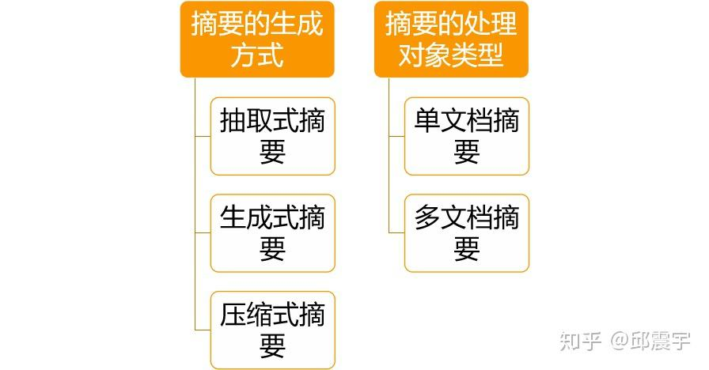
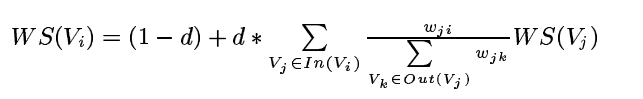
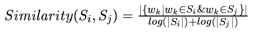
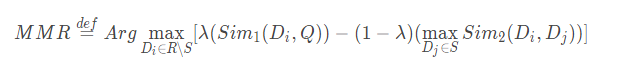
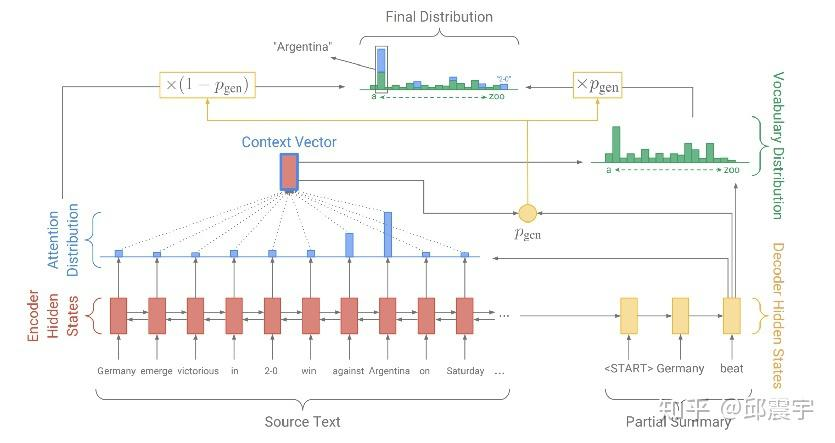
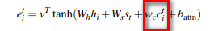
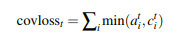
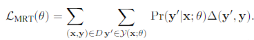

文本自动摘要任务的“不完全”心得总结¶
由于最近需要进行组内的知识分享，因而借此机会将文本摘要的一些基本知识以及本人的一些实践经验做成文稿，一方面用来组内分享，一方面也是总结一下过去在该领域的一些心得体会。因个人的能力所限，本文实质上是对文本摘要的 不完全 总结，如有未能囊括的知识点，还请同学们多提意见，一起进步。
本文将从以下几点介绍文本摘要任务的相关内容。
- 从整体上对文本摘要任务做一个大致的介绍，包括任务分类，评测方式等。
- 介绍抽取式自动摘要的内容。这也是之前我主要研究实践的领域。
- 介绍生成式自动摘要的内容，这里主要介绍经典的seq2seq方法，以及其不同的变种。
- 介绍最近比较前沿的一些对文本摘要的研究。
文本摘要任务总览¶
任务概述：用一些精炼的话来概括整篇文章的大意，用户通过阅读摘要获取文章的主要内容。
文本摘要按照不同的分类准则，可以将该任务分成不同的子任务。如下图所示：

这个分类可能还不是非常完整，但是基本上概括了目前文本摘要的任务类型。
抽取式摘要的模式主要是使用算法从源文档中提取现成的句子作为摘要句。在通顺度上，一般是比生成式摘要要好的。但是会引入过多的冗余信息，无法体现摘要本身的特点。
生成式摘要则是基于NLG技术，根据源文档内容，由算法模型自己生成自然语言描述，而非提取原文的句子。生成式摘要目前很多工作都是基于深度学习中的seq2seq模型，最近在以bert为首的大量预训练模型出世后，也有很多工作集中在如何利用auto-regressive的预训练模型来做NLG任务，其中就包括生成式摘要。除此之外，由于现实环境中往往缺少标注好的摘要数据，因此还有很多工作聚焦在无监督的方式，使用自编码器或者其他思想来做无监督的生成式摘要。
压缩式摘要其实和生成式摘要在模式上有些相似，但是其目的却不同。压缩式摘要主要目标在于如何对源文档中的冗余信息进行过滤，将原文进行压缩后，得到对应的摘要内容。最近有一篇文章，利用了information Bottleneck的原理，尝试对源文本进行压缩后，再做生成式任务，后续会对该论文做一个专门的解读。
单文档摘要和多文档摘要，从任务难度上来看，多文档摘要的难度显然更高。因为对于一个文档集合来说，文档越多，其包含的主题、噪声也越多，因此提取摘要的难度也越大。本人对多文档摘要的研究不多，这里就不多介绍了。
文本摘要任务评测方法¶
文本摘要任务属于文本生成的范畴，因此不能用简单的准召率来评测。当前比较常用的评测文本生成的方法大致就是BLEU，ROUGE等。这些方法的缺点在于评测质量还比不上人工，只是从基本语义单元的匹配上去评测候选摘要和标准摘要之间的相似性，缺少语义方面的维度。因此，如何设计一个合适的评测方法，也是目前文本摘要任务的一个研究方向。下面以ROUGE为例简单介绍一下摘要评测的流程。
备注1：摘要的reference(即用于评测的标准摘要）通常是一个集合，即一个候选摘要通常需要跟多个reference综合摘要来比较。
备注2：还有一种情况是给出的reference直接是文档中的原句，此时相当于对原文中每个句子做一个二分类问题，即一个句子是否是摘要句。这种情况不详细讨论。
ROUGE的基本原理：统计候选摘要句和标准摘要句重叠的基本语义单元（如n-gram），来评价摘要的质量。根据不同的计算重叠的方式，可以将ROUGE分为以下几类：
ROUGE-N系列，其实就是以n-gram为基本单元，计算两个句子之间的n-gram重合率。每个ROUGE系列的计算结果又可以细分为precision，recall和f-beta分数，下面为ROUGE-N的计算方法：
假设候选摘要句为 \( x_m \) ，reference摘要句为 \( y_n \)
ROUGE-N-precision： \( 两个句子重叠的n-gram个数/len(x_m) \)
ROUGE-N-recall: \( 两个句子重叠的n-gram个数/len(y_n) \)
ROUGE-N-f-beta: \( （1+beta^2）precision*recall/(recall+precision*beta^2) \)
ROUGE-L的计算方式与上述类似，但是针对是最长公共子序列的重合率计算。
ROGUE-W与ROUGE-L类似，不同的是考虑了连续最长公共子序列应该拥有更大的权重。
ROUGE-S，基于的是skip-gram。举个例子来说明skip-gram的含义：
我叫邱震宇
所有的skip-bigram字符对有：（我叫）（我邱）（我震）（叫邱）（叫震）（叫宇）（邱震）（邱宇）（震宇）
首先skip-gram必须要按照字符在原始句子中的顺序来组成gram。然后可以根据不同字符数组成词组，但是这些词组不要求字符在原文中连续，可以在中间跳过一些字符。通常会设置一个最大跳跃数m来限制跳跃距离，这是为了防止出现大量无意义的词组。
下面介绍使用ROUGE来做摘要评测的通用步骤：
假设当前reference摘要集有N个摘要。
for i=0;i<N;i++:
计算剔除第i个reference摘要后，剩余N-1的reference分别与候选句计算rouge值，取最大的那个 rouge_i
end for
最后将所有rouge_i计算得到均值。
最后，关于摘要评测用的工具，github上有很多版本，之前我用的是ROUGE.pl+pyrouge。其中ROUGE.pl是用perl语言写的（不得不说这个脚本调用方式不太方便，对于中文数据还有点bug），而pyrouge则是一个wrapper工具，调用的还是ROUGE.pl，只不过接口更加人性化。当然还可以用一些重写ROUGE功能的脚本代码，但是有些脚本计算得到的结果可能会与实际有偏差，这个就需要多方比对了。
抽取式摘要¶
抽取式摘要根据当前标注语料的条件、算力条件等有不同的做法。通常分为无监督和有监督的方法。
有监督的方法主要有：
- 基于传统机器学习的方法，即提取各种特征，包括句子的位置，是否包含关键词，整合无监督方法得到的句子之间的相似性特征等等，使用分类模型进行有监督的训练。
- 基于深度学习，使用序列模型如RNN来做。经典的有SummaRuNNer模型。最近几年也有利用预训练的language model来encode句子，然后做finetune，如fine-tune bert for extractive summarization.
有监督的方法有点在于抽取的效果通常来说都比较好，缺点也很明显， 需要标注的语料 。
无监督的方法主要有：
- 基于传统的统计学特征，对基本语素统计tfidf、熵特征等，间接得到句子的权重分数，根据权重分数为每个句子打分，最后选择比较重要的句子。
- 基于cluster的方法，根据每个句子的特征（可以是词级别的特征，也可以是直接对句子做embedding的特征），将句子进行聚类，然后从每个聚类中分别选择摘要句。基于聚类的思想还是很直观的，它认为一个篇文章的主题分布将句子大致进行了分类，而做摘要就是用尽可能少的篇幅概括文章主题，因此从每个主题聚类中选取句子就能在一定程度上达到目标。这种方法的缺点在于聚类的聚合度和纯净度，以及很多聚类算法都需要指定聚簇个数。即使有一些无参数贝叶斯的主题聚类方法，但是他们在训练和inference上的效率都不尽如人意。
- 基于图挖掘的各种Rank类算法。主要是将句子视作图的节点，然后通过一些图论的算法来构建句子之间的关系，最后计算得到每个句子的权重分数。常见的有TextRank，LexRank等。
- 一些以信息学或者其他数学理论为切入点，研究摘要本质的方法。其中，我看过的相关工作有以submodular函数的特性为切入点同时建模摘要的冗余度和相关性；以信息学为切入点，探讨信息熵、KL散度和摘要的冗余度和相关性以及重要性程度的关系；另外还有以information bottleNeck为切入点，对原文先做无监督的信息压缩，然后再做自监督的生成式摘要的工作。
上面第四点中，说到了一些对文本摘要本质的一些研究。我准备先从这一块开始，简单总结一下相关的工作。
基于submodular函数特性的文本摘要¶
该研究论文源自
A Class of Submodular Functions for Document Summarization
。他将摘要抽取的指导准则设计为以下两个维度：
- 相关度，或者说是摘要对原文内容的覆盖度
- 冗余度，或者说是摘要句的多样性
先来说一下submodular（次模）函数。
submodular函数具有submodularity，它是经济学上边际效益递减（property of diminishing returns）现象的形式化描述。我选取了一个较为好理解的函数定义：
假设有一种集合函数: \( f：2^V\rightarrow R \) ,它可以将有限集V的一个子集S映射为一个实数。如果对于任意的 \( R\subseteq S \subseteq V \) ，且 \( s\in V ,s\notin S \) ，满足：
\( f(S\cup \{s\})-f(S)\leq f(R \cup \{s\})-f(R)\\ \)
则f()为次模函数。上述的定义可以描述成当集合越来越大，则为集合增加s带来的价值会越来越小，这符合边际效益递减的特性。若当 \( S\subseteq T \) 时，有 \( f(S)\leq f(T) \) ，则可以说该次模函数是单调的。
次模函数使得许多组合优化问题能够在多项式时间内得到最优解或者近似最优解，但是它已经被证明是一个NP-hard难度问题。然而有学者证明对一个单调非负的次模函数最优化问题，同时它对子集S规模有约束，可以使用贪心算法获取近似的最优解。
下面介绍如何利用次模函数的特性来设计文本摘要的解决方案。
做文本摘要的时候，可以将问题抽象为一个单调非负的次模函数优化问题，每次选择摘要句时，根据次模函数求得句子的权重分数，从而选择权重分数最大的句子放到摘要集合中。基于之前的描述，可以用贪心算法去求解这个函数优化问题，大大简化问题的难度。这个次模函数函数分为两部分：相关性+冗余性。
\( F(S)=L(S)+\lambda R(S)\\ \)
其中，S表示候选摘要集。L(S)度量覆盖率，而R(S)用于 奖励多样性 。这里并没有使用传统的做法去惩罚多样性，是因为冗余惩罚（在函数中，对冗余度进行惩罚，需要减去冗余分数）破坏了目标函数的单调性。L(S)和R(S)的函数定义分别如下所示：


其中， \( C_i(S) \) 表示对于一个原文中待选的句子与整个当前已有的候选摘要集合的相似度。当 \( L(S)=\alpha*C_i(V) \) 时，表明句子单元i被S 饱和。饱和的意思是 当i和S相似度较高，即使将i添加到S中，覆盖率(即整体相关度)也不会有明显提升，此时可以将文档V剩余的句子也纳入考量范围。
R(S)的函数方法，则是借鉴了句子聚类的方法，先将所有句子聚类，得到K个不同的聚簇 \( P_i \) 。 \( r_i \) 表示一个候选句子与文档其他句子相似度的均值，在一定程度上表现了一个句子在整个文档中的重要性。除此之外，这个 还可以有其他度量方法，比如下面章节讲textrank时计算得到的每个句子的权重就可以作为 。
R(S)设计的核心思想在于：当从一个从未没被抽取摘要句的聚簇P中选取一个句子，其奖励通常会比较大，但是后续从该分区再次选择句子时，得到的奖励将会逐渐衰减。具体来说，加入P1中已经有个句子k1被放到了S中，下轮选择时，计算R（S）值，会将k1的r值在根号计算中衰减掉，使得P1整体的值被衰减。
基于信息理论对文本摘要的论证¶
这个研究来源于A Simple Theoretical Model of Importance for Summarization。是ACL2019上的一篇杰出论文。主要是从相关性，冗余度、informative和importance四个维度，以信息理论为支撑，对文本摘要做了一个研究。相关的论文解读我之前写过一篇文章，感兴趣的可以去看看：抛开模型，探究文本自动摘要的本质——ACL2019 论文佳作研读系列。
下面介绍一下本人之前研究过的一些无监督做抽取式摘要的方法，包括：TextRank,MMR等。
TextRank¶
TextRank是一种基于图算法的无监督抽取式摘要方法。它的思想来源于谷歌的pagerank。相信很多人对pagerank应该是比较了解的，这里简单描述其思想。
pagerank的目的是对每个网页进行打分，将分数高的网页放在前排。假设当前有A,B,C三个网页。A能够跳转到B和C。假设每个网页的权重分数分别为 \( W_a,W_b,W_c \) 。pagerank的核心思想在于一个网页的重要性程度与它本身链接跳转到的网页数有关，也和链接到的网页本身的权重分数有关。因此以网页为节点，建立网页之间的有向图。那么网页A的重要性程度可以通过设计一个优化函数来计算得到。简单说就是为了计算A的权重，需要将B和C的权重加权求和。但是假如B也能跳转到C，那么B的权重分数计算也需要C的权重。基于此，设计了一种幂方法，来迭代计算网页的权重。

TextRank基于pagerank，改进了算法以适应文本摘要任务。首先，它将每个句子作为图的节点，一篇文档中，每个句子两两间都通过边来连接。其次，每条边要赋予一个边权重。与网页不同，文档中，句子和句子之间的关系更加复杂。最后基于上述思想，得到一个需要用幂方法迭代来解决的目标函数：

其中， \( w_{ji} \) 表示节点i和j之间的边权重，即两个句子之间的相似度。默认任意两个句子都是相连的。假设当前i=1，j=2,等式右侧第二部分中，分母表示句子2与所有句子的相似度的和，分子表示句子1与句子2的相似度，再乘上句子2的权重，得到句子2的一个分数。最后对于所有与句子1相连的句子j求和，得到所有的分数之和。
这里要解释一下为什么函数会分为两部分。上面讲pagerank时，通用的场景对应函数的第二部分。但是还存在一些特殊情况会让该部分函数永远无法收敛：
- 存在环形节点
- 存在孤岛节点
出现上述情况时，会使得数据流动一直在限制某个局部的区域。因此算法设计了一个random walk机制，以一定的概率，随机游走到一个随机的节点。这个概率就是上面公式中的(1-d)，d又称为阻尼系数。
回到上述公式的求解，了解马尔科夫状态转移的同学看到这个应该就能联想到，之所以这个公式能够收敛，是因为它通过随机游走算法，在一段时刻之后可以达到一个平稳态，得到一个平稳分布。
算法工具：对于中文数据来说，比较著名是TextRank4Zh。它使用默认使用jieba分词做分词工具，是一个非常易用的抽取式摘要工具。
对TextRank的改进¶
对于TextRank算法来说， 是其可以被改进的点。设计合适的句子相似度算法，可以提升摘要抽取的质量。在TextRank4Zh中，默认的句子相似度计算方式如下：

该方法采用简单的词元的重合度匹配来计算两个句子的相似度。显然，这种方法还是比较简单原始的。改进地方很多，大致分为以下两个方面：
- 采用多样化的句子相似度计算。如LexRank中的方法，对每个句子采用词元的tfidf相关特征，得到句子的特征表示，然后采用余弦相似度，得到两个句子的相似度。
- 用更好的方式去编码句子，使其用更稠密的向量表示。
其中，方法2在目前有很多可选的方案。具体如下：

其中，第一种方案常见的有词向量加权求和（权重可以是词的tfidf），或者是最近几年研究比较多的sif或者usif方法，利用矩阵分解的相关技术来提升句子向量表示效果。这些方法优点在于简单高效，但是缺点就是未将整个句法语义信息编码到向量中。
第二种方案常见的有sent2vec,doc2vec,skip-thought等。基本上都是借鉴词向量的训练方式，将其改造，以适用于句子向量的训练任务。
第三种方案是以Bert，GPT-2，XLNET等预训练language model为代表的一系列方法。目前这个方案的效果还是不错的，研究热度也很高。缺点在于对于算力的要求实在是有点高。
MMR¶
TextRank的优点在于不需要标注数据，不需要进行预训练，效果尚可。但是缺点也很明显。从其核心思想可以看出来，它挑选摘要句时会 侧重于挑选那些与很多句子相似度高的句子 。因此，最后会导致挑选的很多句子冗余度比较高，从而遗漏一些带有其他主题信息却“势单力薄“的句子。为了缓解这个问题，我在之前的工作中尝试引入了submodular函数和MMR方法，submodular方法前面已经说过了，这里介绍一下MMR方法。
MMR，全称为Maximal Marginal Relevance。它的核心思想同时考虑了内容相关性和多样性。公式如下：

其中，R是原文句子集合，S是当前已有的摘要集合。Q是原文所有句子集合。 \( D_i \) 表示从剩余的文章中选择一个候选摘要句计算MMR。等式右边的第一部分衡量候选句子和原文的相似度。第二部分衡量候选句子和当前已有的摘要集合的冗余性。
优化该函数使用的是贪心方法，在每一轮选择摘要句时，计算每个句子的MMR得分，然后选择分数最高的那个放到候选摘要集合中。
我们可以将MMR方法与TextRank方法结合起来，各取其优点。我是这么做的：
将等式第一部分，用TextRank学习到的句子的权重得分替换 \( Sim_1() \) 。TextRank的权重得分是在句子相似度的基础上通过无监督学习得到，比直接使用相似度要更全面。
methods might work but actually not¶
这一章节列一些我之前思考尝试过的一些方法，但是最后实际效果却不如预计，可能是我在具体实现上有些问题，这里贴出来，供大家一起思考。
1、基于刘知远老师的一篇论文做的一个尝试。衡量相关性可以借鉴机器翻译的思想，即A和B如果相关度高，则A翻译为B的概率应当也是比较高的。因此可以使用一些基于词对齐模型的传统翻译模型，如IBM model系列。得到每个句子和文章剩余内容的一个对齐概率。后续可能改进的点有：
- 这个概率值用法也有多种，例如直接作为一个特征，并赋予一个超参数权重，与TextRank和MMR整合起来，通过ROGUE值来调整。
- 或者直接将这个概率作为挑选候选摘要的依据。每次挑选对齐概率最大的那个作为摘要句。
2、衡量冗余性：假定我们在之前的流程中会将句子编码到同一个向量空间中，当前已有摘要集合为S，待候选摘要为 \( C_i \) 。有如下思想：可以通过将一个句子A向量进行一个方向上的分解，其中一个方向为句子B向量的方向，另一个方向是与B垂直的方向，两个句子的冗余程度体现在两个句子在同一方向上的模长的比值。假设两个句子很相似，即两个句子夹角很小，此时句子A在句子B上的投影应当是很大的。（这个方法有点缺陷，即除了夹角外，向量之间的欧式距离也有影响。）

SummaRuNNer¶
关于抽取式摘要，最后讲一下SummaRuNNer。对于该算法模型，我并没有做过多的实践研究，这里只简单描述其思想。
SummaRuNNer，基于RNN，将除了对词级别做RNN编码外，还在句子级别上做了RNN的编码，最后训练的target为每个句子是否属于摘要句子。如图所示：

该论文另一个比较重要的设计在于它的训练目标函数，如图所示：

可以看到，它从多个不同维度去建模一个摘要句的特征，包括之前说的相关度和冗余度，除此之外还有句子本身包含的信息量，句子在文章中的位置（通常来说文章开头的句子是摘要句的可能性比较大）等。
生成式摘要¶
相对于抽取式摘要，我在生成式摘要上的工作还是比较少的，目前也在努力研究中。
目前，大部分做生成式摘要都是用NLG的方式去做的，其中大部分都是基于的seq2seq框架。关于seq2seq，我之前的文章也有讲过，详见：seq2seq之tensorflow源码解析。
也有一些学者研究如何利用深度无监督模型去做生成式摘要任务。如以自编码器为主体架构，对其进行不同程度的改造，从压缩或者生成两个角度去无监督生成摘要文本，同时为了提升效果，也会利用GPT,XLNET等预训练语言模型做finetune。这也是后续我准备深入研究的领域。
使用seq2seq框架做摘要通常会遇到以下几个问题：
- OOV问题。源文档语料中的词的数量级通常会很大,但是经常使用的词数量则相对比较固定。因此通常会根据词的频率过滤掉一些词做成词表。这样的做法会导致生成摘要时会遇到UNK的词。
- 摘要的可读性。通常使用贪心算法或者beamsearch方法来做decoding。这些方法生成的句子有时候会存在不通顺的问题。
- 摘要的重复性。这个问题出现的频次很高。与2的原因类似，由于一些decoding的方法的自身缺陷，导致模型会在某一段连续timesteps生成重复的词。
- 长文本摘要生成难度大。对于机器翻译来说，NLG的输入和输出的语素长度大致都在一个量级上，因此NLG在其之上的效果较好。但是对摘要来说，源文本的长度与目标文本的长度通常相差很大，此时就需要encoder很好的将文档的信息总结归纳并传递给decoder，decoder需要完全理解并生成句子。可想而知，这是一个很难的事情。
- 模型的训练目标与最终的评测指标不太一致。这里牵扯到两个问题，一个是seq2seq的训练模式中，通常会使用teacher-forcing的方式，即在decoder上，将真实target的输入和模型在前一时刻生成的词一起送到下一个时刻的神经元中计算。但是在inference时，是不会有真实target的，因此存在一个gap；另一个问题就是通常模型训练的目标函数都是交叉熵损失函数。但是摘要的评测却不是以交叉熵来判断的，目前一些榜单通常以ROUGE、BLEU等方式评测，虽然这些评测也不是很完美，但是与交叉熵的评测角度均在较大差异。
目前，已经出现了很多研究来尝试解决上述的方法。比如ACL2019中的最佳长论文就是尝试解决问题5。下面我将简单介绍pointer-network，其可以在一定程度上解决问题1,2,3。
Pointer-network¶
方法来自论文：Get to the Point.

核心思想在于，在decoder上，每个训练样本构建的词表除了原始的词表外，还需要增加训练样本输入文本的词表，具体做法如下：
每个training data的词表都是不一样的。词表=global词表+local词表。
global词表：整个语料使用传统的方法将低频词使用UNK表示，其他词添加到词表中。
local词表：每个training record输入语句的词表，与global词表用不同的id_set表示。
同时在模型中设计一个 \( P_{gen} \) ,表示最终使用的模型输出是否使用decoder生成的词的概率。如上图所示，encoder的attention生成的alignment会参与到最后decoder输出词分布的计算中。
该模型还有一个独创点在于设计一个Coverage mechanism来解决生成重复的问题。主要包含了两个方面：
1、在计算encoder的attention时，在原始的计算公式中，增加了历史时刻的attention history信息，如图红色框中的内容： \( c_i \) 表示的是历史attention信息的累积。

2、增加一个coverage loss，来惩罚生成重复词的行为。

在实际的使用中，不能直接在训练一开始就将covloss囊括进来。原因是训练初期，模型在相关度和信息度上还没有训练得到一个稳定的模型，此时将covloss加进来的话，会大大降低模型的性能。因此最好的实践方式是在模型训练后期即将收敛时，再将covloss加进来。
pointer-network在一定程度上确实能很好解决问题1,2,3。但是却对问题4,5没有很好的解决办法。
下面最后介绍一个研究，从某种程度上算是针对问题5做了优化。
Neural Headline Generation with Minimum Risk Training¶
论文来源如下：Neural Headline Generation with Minimum Risk Training。
这篇论文主要新颖点在于将ROUGE、BLEU等无法直接用作损失函数的评测指标（因为这些指标都不可微，不能参与梯度更新）引入到了训练目标函数中：

其中， \( Y(x;\theta) \) 表示对于文章x，模型能够生成的所有可能的摘要集合。y表示reference摘要句， \( \Delta(y',y) \) 表示候选摘要句和reference的距离。 \( E_Y(x;\theta) \) 表示所有可能的摘要集合与reference距离的期望。
将上述公式进一步拆开，得到：

实际上，上述公式的思想在于通过 \( Y(x;\theta) \) 概率分布，采样得到一个候选摘要子集，从这个子集中，计算每个摘要和reference的距离。此时可以引入ROUGE等指标作为distance，因为 \( \Delta \) 此时相当于是一个常数。
但是，翻了一下论文，作者似乎并没有给出如何采样得到摘要子集的算法。之前在一个比赛群中有听过作者的分享，当时是说了这个方法，后来手机换了，信息丢失掉了。如果有知道的同学还请告知一下，后期我会补充在文章中。
updated on 2020/03/24 基于作者大大的评论回复，论文中对于摘要子集的采样使用的最简单的随机采样，特补充在此。
该论文在实践过程中也需要注意训练的模式问题。即在模型初始训练过程中，不能直接使用上述的目标函数，理由是在模型训练初期，生成的摘要都比较差，此时不管怎么采样，都不会得到很好的模型。因此需要通过交叉熵损失函数先将模型训练到一个较为稳定的状态，然后再引入新的损失函数。
其他未来研究¶
除了上述工作研究外，目前还有很多前沿的文本摘要研究。例如引入了强化学习的思想，试图将一些评测指标作为reward来让模型进行自我学习。也有一些研究设计了一种新的模式，即先通过某种方法将源文档做一个压缩，得到一个长度较为合适的文本。然后以压缩后的文本为target，训练生成式。根据压缩方式的不同，有不同的论文研究，例如Fast Abstractive Summarization with Reinforce-Selected Sentence Rewriting，以及BottleSum: Unsupervised and Self-supervised Sentence Summarization using the Information Bottleneck Principle等等。后续会专门对一些感兴趣的论文做专门的解读。
另外，在最近的实践中，发现了一些新的decoding方法用于inference，比如top-k，top-p等。前者在每个时刻保留模型生成的概率最大的k个词，然后从这k个词中采样得到当前时刻的最终输出。而top-p则是将词按照概率分布降序排列，进行概率的累计计算，当累计概率达到阈值P时，停止计算，在当前阈值P内的所有词中采样。通过实践，发现这些方法对最后模型的效果都有一定的提升，算是一个trick吧。后续也会持续对decoding的相关方法做更深入的研究。
总结¶
本文主要总结我在文本摘要方面的一些研究和实践心得，只涉及到了文本摘要任务的很小的一方面。后续，还将继续在该领域持续钻研，希望后续能在这方面有更多的心得产出。同时，也欢迎各位同僚多多交流，共同进步。
凡本网注明"来源：XXX "的文/图/视频等稿件，本网转载出于传递更多信息之目的，并不意味着赞同其观点或证实其内容的真实性。如涉及作品内容、版权和其它问题，请与本网联系，我们将在第一时间删除内容！
作者: 邱震宇, 华泰证券股份有限公司 算法工程师
来源： https://zhuanlan.zhihu.com/p/83596443